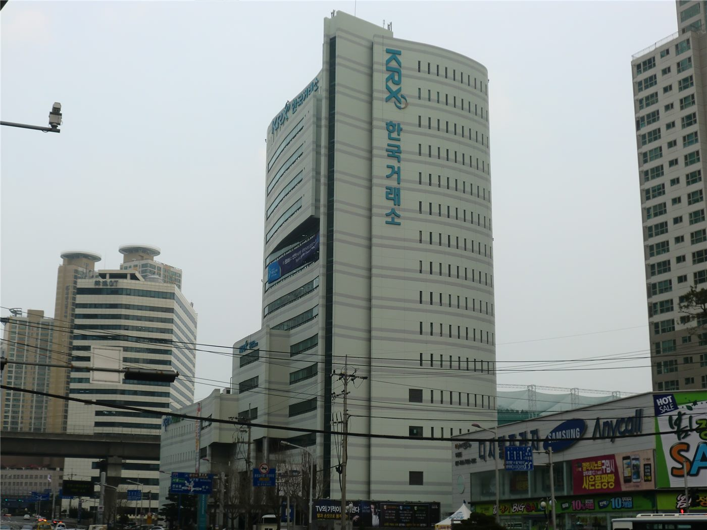

반도체주 변동성 30년래 최고… “닷컴버블 붕괴 때보다 격렬”
반도체 관련 주식의 주간 변동성이 30년 만에 최고 수준으로 치솟았다. 분석가들은 2000년 닷컴버블 붕괴 당시보다도 등락이 격렬하다고 진단했다. 인공지능 열풍이 만든 기대와 불안이 시장을 크게 흔들고 있다.
유종한 기자 · 2026.07.24
橋경제·문화·스포츠

반도체(칩) 관련 주식의 이번 주 변동성이 30년 만에 최고치를 기록했으며, 닷컴버블 붕괴 이후보다도 등락이 격렬하다고 대만 연합보(聯合報)가 전했다.
광고 문의 · 300×250변동성이 커졌다는 것은 주가가 큰 폭으로 오르내린다는 뜻이다. 인공지능 투자 열기로 반도체 종목이 급등해 온 가운데, 고평가 논란과 실적 검증 요구가 맞물리면서 작은 뉴스에도 주가가 크게 출렁이는 국면이 됐다.
시장 일각에서는 과열 경고가 나온다. 기대가 선반영된 주가는 실적이 이를 뒷받침하지 못하면 급격히 조정될 수 있어, 변동성 확대 자체가 시장이 불안정하다는 신호로 읽히기도 한다.
반면 장기 성장에 무게를 두는 쪽은, 단기 변동성과 기업의 본질 가치를 구분해야 한다고 강조한다. 인공지능이 여러 산업의 생산성을 실제로 끌어올린다면, 현재의 출렁임은 성장 국면의 진통일 수 있다는 것이다.
華橋時報는 특정 종목의 매수·매도를 권하지 않는다. 다만 변동성이 큰 국면일수록 투자자는 기대와 실적을 분리해 보고, 감당 가능한 위험의 범위 안에서 판단해야 한다는 원론을 전한다. 華橋時報는 투자 자문 기관이 아니다.
출처·참고 (사실 확인용 — 본문은 직접 재작성)
· 연합보
· 연합보